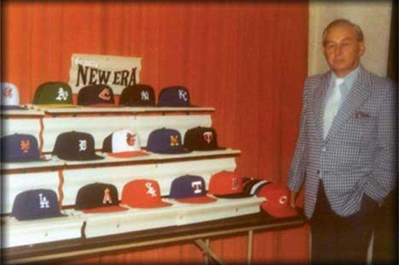

The history of New Era began when it was established in 1920 in the United States by Ehrhardt Koch, who decided to leverage his experience in hat production to create something different and unique with his own concept. Initially, the idea was to make hats, beanies, and berets. In just one year of the company's existence, 60,000 hats were produced. In 1934, the first professional baseball cap was launched.
Born in Germany, Ehrhardt Koch is the founder of New Era. He immigrated to New York with his parents and worked in a cap factory, deciding to bring his knowledge with a unique concept. Ehrhardt Koch's son, Harold, began working in the company and was the one who invested in the first caps for the baseball league, and it is currently the world's largest cap manufacturer.
Gregório Schmidt 2023 - ©All rights reserved
School project - Non-profit